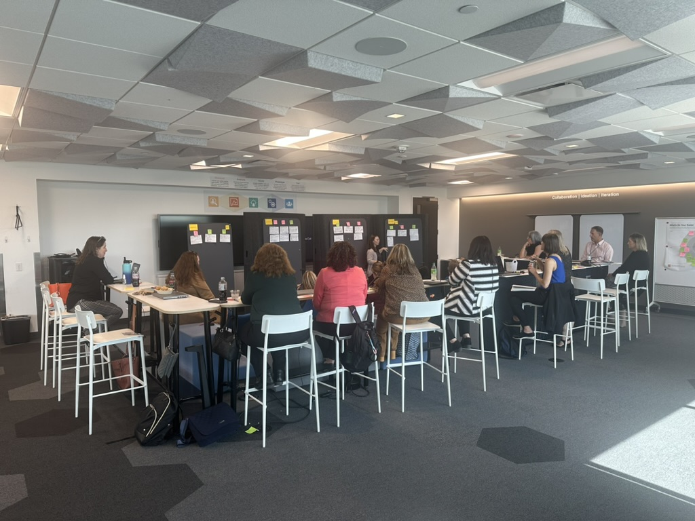
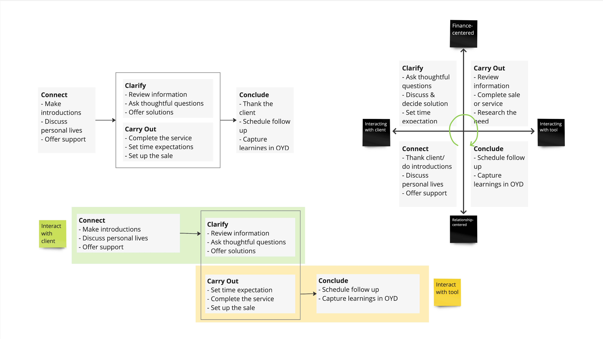
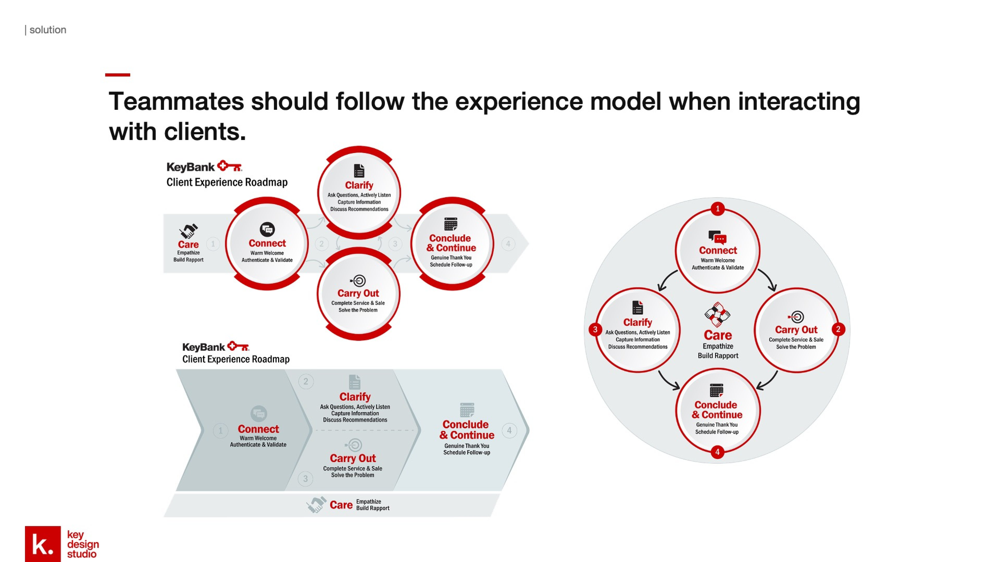
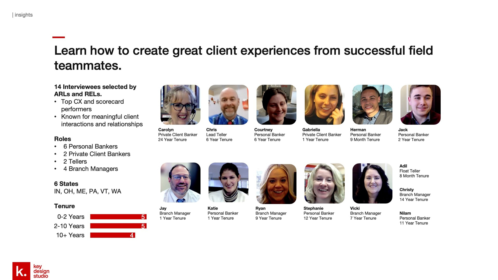
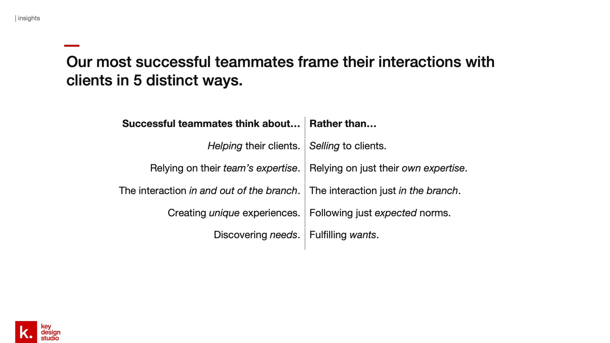
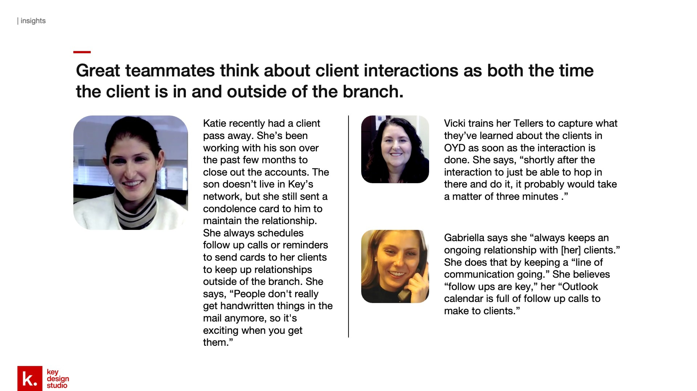
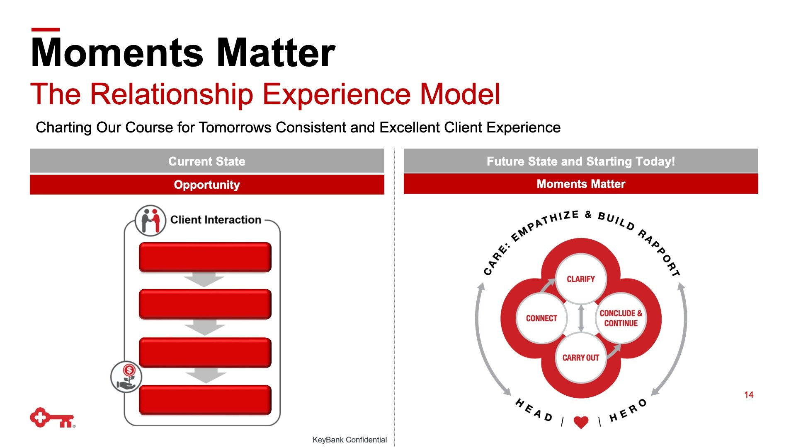
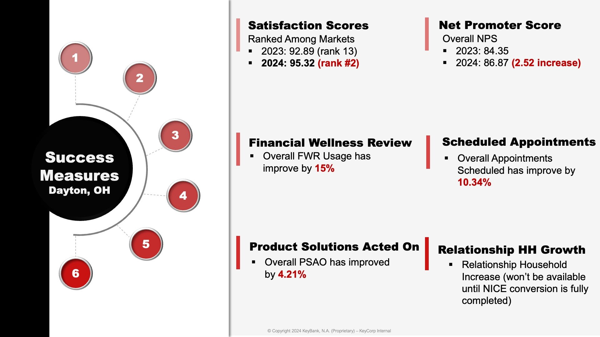

The opportunity
KeyBank's retail branches were struggling with inconsistent client experiences. The quality of interactions between bankers and clients varied widely and leadership knew that the relationship between banker and client was a key differentiator in a competitive market.
As Project Lead and Service Designer, I was asked to scope and deliver a solution within 4 months that could realistically be implemented across the full branch network.

The fragmented toolkit bankers were navigating before the project — a key driver of inconsistent experiences.
A full design cycle in four months

One of two cross-functional workshops held to align stakeholders and ideate solutions.
Learning from the people already doing it well
Rather than designing from scratch, I recruited and led 14 in-depth interviews with bankers who were already known for creating exceptional client experiences. Bankers were selected across roles, geographies, and tenure levels.
Using narrative analysis, I surfaced 5 core mindsets that separated high performers from average ones.

14 interviewees selected by ARLs and RELs across 6 states, spanning 9 months to 24 years of tenure.
The most successful bankers think about helping clients rather than selling to clients. They rely on their team's expertise, not just their own. And they think about the interaction in and out of the branch, not just within it.

Insight slides brought individual banker stories to life, grounding each finding in real voices.
Five mindsets that define exceptional bankers
Narrative analysis of the 14 interviews revealed a consistent pattern: the most successful bankers didn't just behave differently, they thought differently. I distilled this into 5 core mindsets that became the foundation for the model.

The 5 mindsets framework — translating research into the design principles for the model.

How each mindset directly informed a design requirement for the conversational model.
The Relationship Experience Model
I led the team to ideate over 20 versions of a conversational model, workshopped 3 candidates with cross-functional stakeholders (Sales Enablement, L&D, Corporate Communications, Marketing), and refined the final model into a teachable framework.
The final model, built around the 5 C's: Care, Connect, Clarify, Carry Out, Conclude and Continue, gave bankers a shared language and a concrete structure for every client interaction.

Early ideation: 20+ model versions exploring different structures before converging on the 5 C's.

The final Relationship Experience Model, designed to be teachable and memorable across all banker roles.
Measurable impact within 2 months of pilot
After piloting in Dayton, OH and iterating on the training materials, the model was rolled out network-wide. Results from the pilot market showed clear improvement across all tracked metrics.

Success measures from the Dayton, OH pilot — across NPS, scheduled appointments, Financial Wellness Reviews, and PSAO.
What I'd do differently
The biggest gap in our research was not seeing the work in context. Budget constraints kept me from conducting in-branch observation, which meant our insights came entirely from what bankers told us, not what we watched them do. Behavioral research in the actual environment would have surfaced edge cases and workarounds we couldn't have anticipated from interviews alone. If I ran this project again, in-branch observation would be non-negotiable.